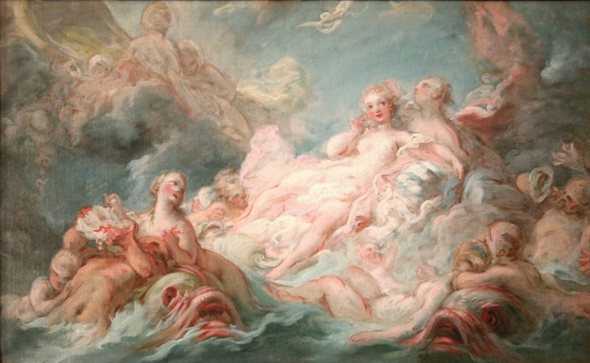
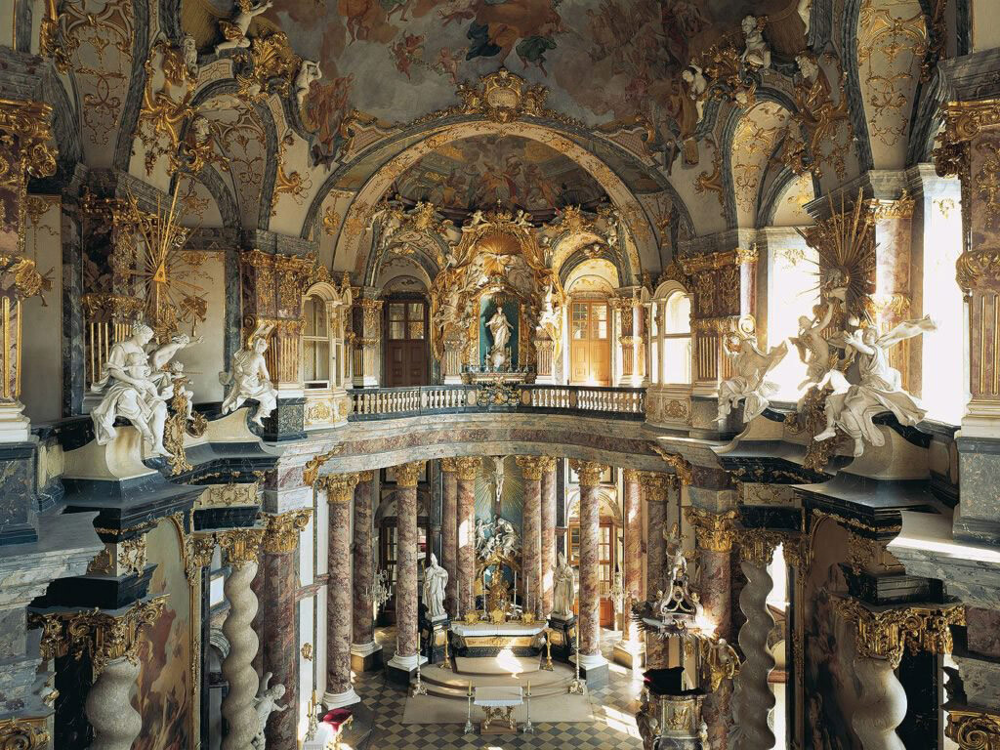
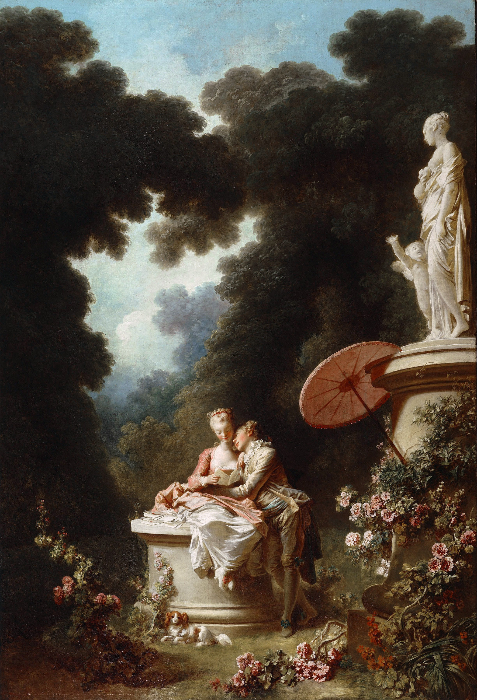
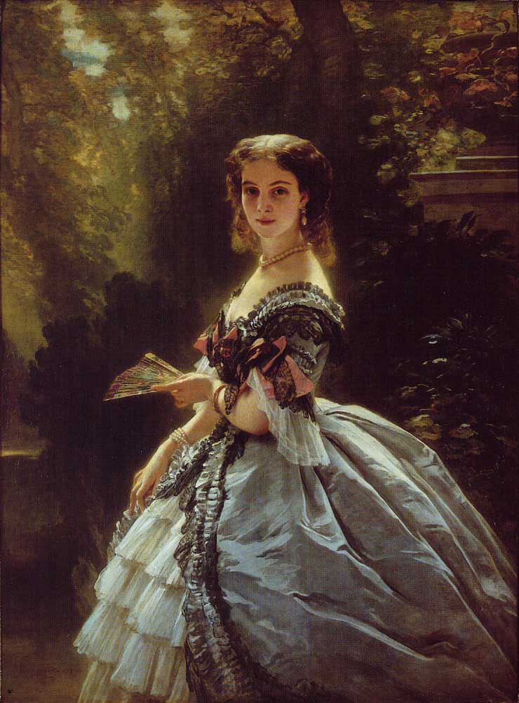
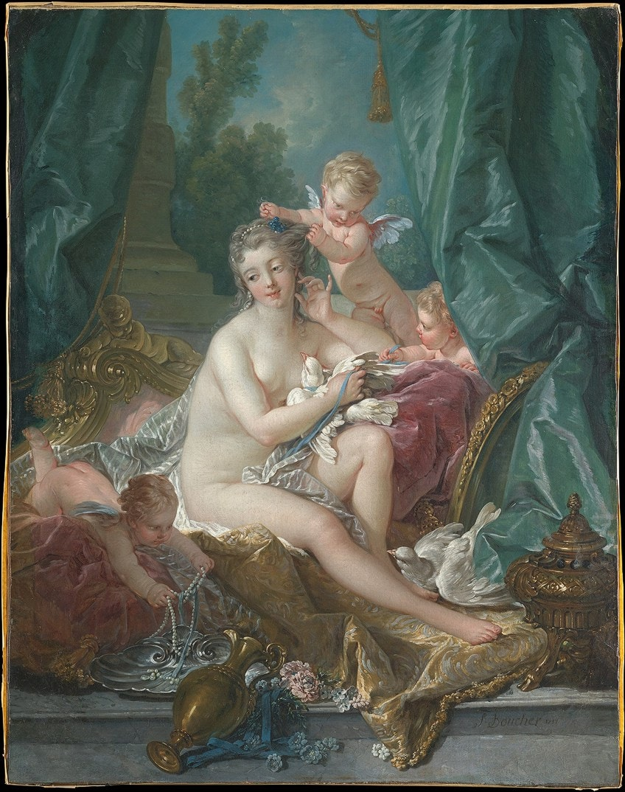

The Rococo Art Movement

The Beginnings of Rococo
In the early years of the 1700s, there was a shift
toward a new style now known as Rococo.
Sometimes referred to as Late Boroque,
and often described as the final expression of
the Boroque movement.
The Palace of Versailles is a royal chateau that was once
the center of politcal power, located in Versailles, France (12 miles west
of Paris, France). The former residence of King Louis XIV, was
abandoned by the aristocracy, who once again took up residence
in Paris.
A shift away from the monarchy, toward the aristocracy characterizes the art of this
period.
Architecture
France was the center of the development of Rococo; as a reaction
against the Louis XIV style, which was fundamentally geometric and formal.
Rococo features exuberant decoration, with an abundance of curves,
counter-curves, undulations and elements modeled on nature.

Court Church of Residence Würzburg
Asymmetrical curves, sometimes derived from organic forms, such as
seashells were elaborate and exaggerated.
Minimal emphasis was placed on architecture and maximum
emphasis on décor is essential to the Rococo movement.
In design,
the salon,
a room for entertaining but also impressing guests,
was a major innovation.
Rococo salons are characterized by their elaborate detail,
intricate patterns, serpentine design work, asymmetry, and a
predisposition to lighter, pastel, and gold-based color palettes.
The most famous example was Charles-
Joseph Natoire and Germain Boffrand's La Salon de la Princesse
in the residence of the Prince and Princess de Soubise.
Jean-Honore Fragonard
The Swing
Symbolizing ideas of infidelity, desire,
eroticism, love, and power, Its hedonistic
subject and obsessive detail make it an icon of Rococo style.
Honorable Mentions


